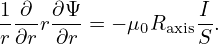

In the cylindrical coordinates (R,ϕ,Z), the location vector is written as
|
| (146) |
Using this, we obtain
 | (147) |
Substituting this into the equation of motion gives
 | (148) |
The R component of the above equation is written as
 | (149) |
Using

 | (152) |
Equation (152) is used in my numerical code. The  Z component of Eq. (148) is written as
Z component of Eq. (148) is written as
 | (153) |
Using


 | (156) |
Equation (156) is used in my numerical code.
Next we consider the equation for the time evolution of v∥, Eq. (141), i.e.,
 | (157) |
The first term of on the right-hand side of Eq. (157) can be written as
![[ ( )]
κ ⋅[b × ∇B ] = (κ ˆe + κ ˆe + κ ˆe )⋅ (b ˆe +b eˆ + b ˆe )× ∂B-ˆe + ∂B-ˆe
R R Z Z ϕ ϕ R R Z Z ϕ ϕ ∂R R ∂Z Z
[ ∂B- ∂B- ∂B- ∂B- ]
= (κR ˆeR + κZ ˆeZ + κϕˆeϕ)⋅ − bR ∂Z ˆeϕ + bZ∂R ˆeϕ − bϕ ∂RˆeZ + bϕ∂Z ˆeR
∂B ∂B ( ∂B ∂B)
= κRbϕ---− κZbϕ ---+ κϕ bZ---− bR --- . (159)
∂Z ∂R ∂R ∂Z](guiding_center_motion193x.png)
![μ ( ∂B ∂B ) μv∥ [ ∂B ∂B ( ∂B ∂B) ]
˙v∥ = − m bR ∂R-+ bZ∂Z- + m-Ω- κRbϕ∂Z-− κZbϕ ∂R-+ κϕ bZ∂R-− bR ∂Z- .](guiding_center_motion194x.png) | (160) |
Equation (160) is used in my numerical code.
Next consider the  ϕ component of Eq. (148), which is written as
ϕ component of Eq. (148), which is written as
![1 [ (μ 2 )]
R ˙ϕ = v∥bϕ + Ω-ˆeϕ ⋅ b × m-∇B + v∥κ .](guiding_center_motion196x.png) | (161) |
Using
 | (164) |
Equation (164) (in normalized form) is used in my numerical code.